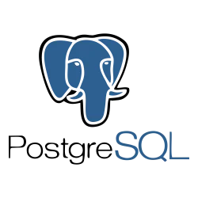
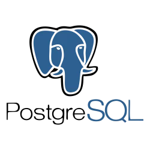
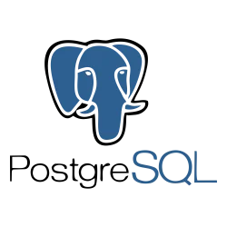

Soy una persona creativa, apasionada por lo que hace e impulsada por la mejora constante. Me encanta innovar, encontrar nuevas formas de resolver problemas y entregar cada proyecto con la más alta calidad, cuidando cada detalle para que sea único y funcional. Actualmente me estoy formando como desarrollador fullstack y analista de datos, combinando el diseño, la programación y el análisis para crear experiencias que realmente marquen la diferencia.

Nov 2022 - Present
Obtuve una certificación de Python avanzada con Cisco, donde aprendí desde fundamentos hasta técnicas avanzadas para desarrollo, automatización y análisis de datos, fortaleciendo mis habilidades de programación y resolución de problemas.
Apr 2020 - Nov 2022
Completé un curso intensivo en Udemy para llevar mis conocimientos de Python a nivel experto, enfocándome en programación orientada a objetos, manejo de librerías y desarrollo de proyectos completos.
Jan 2018 - Apr 2020
Certificación intermedia en JavaScript con Cisco, donde profundicé en ES6+, manejo de eventos, manipulación del DOM y buenas prácticas para el desarrollo web dinámico y responsivo.
Jan 2018 - Apr 2020
Certificación oficial de Microsoft en C#, cubriendo programación orientada a objetos, desarrollo de aplicaciones de escritorio y uso de frameworks modernos para mejorar la productividad.

Jan 2018 - Apr 2020
Capacitación integral en Excel desde nivel básico hasta avanzado, incluyendo manejo de fórmulas, tablas dinámicas, macros y automatización de tareas para análisis eficiente de datos.
Curso de Introducción a la Programación en la Universidad Politécnica de Querétaro (UPQ), donde aprendí los conceptos básicos de algoritmos, lógica y desarrollo de código para resolver problemas simples.
Estudio de Arquitectura de Computadoras en UPQ, que abarca el diseño y funcionamiento de los componentes internos del computador, incluyendo procesadores, memoria y buses.
Curso de Ruteo y Conmutación, enfocado en técnicas para dirigir el tráfico de red y conmutar paquetes eficientemente, fundamental para la administración de redes.
Aprendizaje sobre Estructura de Datos en UPQ, manejando arreglos, listas, pilas, colas, árboles y grafos para optimizar la manipulación y almacenamiento de información.
Ingeniería de Software, donde se estudiaron metodologías, ciclos de vida del desarrollo, gestión de proyectos y calidad de software para crear aplicaciones robustas.
Fundamentos de Programación Orientada a Objetos (POO), introducción a clases, objetos, herencia y encapsulación aplicada a la solución de problemas.
Escalamiento de Redes, curso para diseñar y administrar redes que puedan crecer en tamaño y capacidad sin perder rendimiento.
Curso general de Programación en UPQ, ampliando conocimientos en lenguajes y paradigmas de desarrollo.
Introducción a Redes, conceptos básicos de topologías, protocolos y funcionamiento de redes de comunicación.
Base de Datos, estudio de modelos, diseño y consulta de bases de datos relacionales y no relacionales.
Administración de Base de Datos, administración, seguridad y mantenimiento de sistemas gestores de bases de datos.
Sistemas Operativos, comprensión del funcionamiento interno, gestión de procesos y recursos del sistema.
Programación Orientada a Objetos avanzada, aplicación de patrones de diseño y buenas prácticas en desarrollo de software.